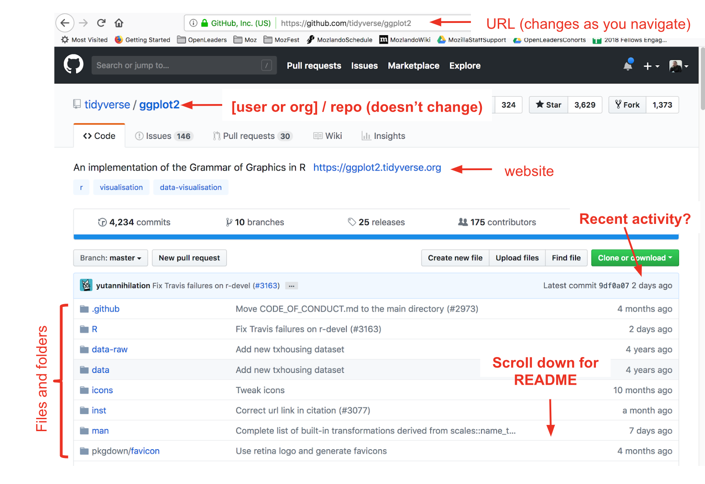

GitHub for publishing
GitHub is known as a place to store code, but it’s also a powerful publishing system. It is a way to help you share about your project on the open web, which lets you share about your science earlier.
Preamble
We are going to work with GitHub from the browser only, because it makes the best use of our short time together. It is also a powerful way for folks to contribute and collaborate even if they are not involved in day-to-day hands-on analysis. So this might be good for new lab members or students to contribute to your lab as soon as possible.
GitHub can reduce friction for open science: it gives us avenues for communicating and publishing methods, blogs, interactive graphics and more, without a lot of heavy lifting!
Prerequisite
You will need to create GitHub account at http://github.com, if you don’t already have one. For username, I recommend all lower-case letters, short as you can. I recommend using your .edu email, since you can request free private repositories via GitHub Education discount.
What is GitHub? — Traditional answer
GitHub means GitHub.com; it’s a company that is an online collaborative platform, with some features familiar to social media users.
GitHub centers around git, which is powerful version control software for your local computer. This has been around for years, taking care of bookkeeping for you locally on your computer.
GitHub makes git’s local bookkeeping collaborative through its powerful online platform. It will weave together all the version control from your local computer with other collaborators you work with.
It is used for code and files: organize, archive, bookkeeping, searchable, changes visualized, etc. In the figure below, notice the familiar red and green to denote deletions and additions line-by-line, with darker shading to identify specific text within a line. Also notice the differencing in the image’s color bar!

We aren’t going to teach traditional git/GitHub today, but here are some recommendations if you’d like to learn. First, read Jenny Bryan’s “Excuse Me, Do You Have a Moment to Talk About Version Control?” (open-access pre-print from PeerJ, published in The American Statistican). This provides an excellent overview. One quote I like in particular is
Collaboration is the most compelling reason to manage a project with Git and GitHub. My definition of collaboration includes hands-on participation by multiple people, including your past and future self, as well as an asymmetric model, in which some people are active makers and others only read or review. - Jenny Bryan, “Excuse Me, Do You Have a Moment to Talk About Version Control?”
Next, to learn GitHub with R, the absolute best resource is Jenny Bryan’s Happy Git With R. This is a comprehensive, friendly step-by-step process of how to do so, and is an awesome reference for seasoned git/GitHub users as well. If you want a shorter-form resource, I’d recommend 2 tutorials from R for Excel Users. This also teaches you how to set up GitHub to sync directly through RStudio, so that you don’t have to have any other software (including the command line) open to do so:
On my local computer, I interact with GitHub through RStudio 99.9% of the time (use command line .1% of time).
What is GitHub? — Non-traditional answer
Publishing platform
It’s for books like this one (openscapes.org/series), websites like openscapes.org, which was built with R’s blogdown package, and interactive dashboards.
Project management system
GitHub is also a project management system for short and long-term tasks. It is really powerful to have collaborative “todo”’s in the same software (and user accounts) as all the analysis and all the people that you’re already working with.
We will talk about “Issues” & “Projects” in the next chapter.
GitHub framework in a nutshell
Users vs. organizations
Example: jules32 is a user account, openscapes is an organization group.
You can think of them like other social media accounts: I can be an individual or part of a group, and there are permissions associated with both.
Repositories (“repos”)
Repos are GitHub’s main unit. They are essentially a folder, and you’ll put files and folders in them. They are contained, with permissions specific to each one.
It makes it easier to navigate through and find stuff — so you are “not sifting through a zoo of files” as one Openscapes Champion has said.
“Commits” & “commit messages”
Unlike Dropbox or Google Drive that constantly and automatically sync to the cloud, you have to deliberately tell git/GitHub when you have an amount of work that you want to be versioned and synced. You have to commit to telling them. GitHub takes care of the backend bookkeeping involved, but you have to write a human-readable message to your future self and others. That is the commit message.
There is no absolute guidance for how often to commit, but I think of it as leaving breadcrumbs for yourself. How much work and on what things/in what combination would you like to be able to reverse? What kind of information will make it easier for Future You to work with?
Public vs private
You can have both public (the free default) and private repositories, and change these permissions later on. I mostly work in public repos, but if I work in private ones, I often have the expectation that they will be made public some day. So I practice good habits with commits and documentation, and keep conversations on-topic.
The search feature is awesome
You are able to search within a GitHub repository, across repositories in an organization, or across all GitHub public repositories. I find this helps me find things quickly if I’m looking for how I’ve used a function in the past, or if I remember a word that would stand out that I included in a commit message as a breadcrumb to myself. It will also search Issues within the repositories, so you can look for specific words in conversations as well.
Branches & Forks
We’re not going to talk about branches and forks. These are a core feature of what makes GitHub super powerful for software development, and one of the first things you’ll see in GitHub tutorials geared towards software engineers. But I do not think that is the most relevant or smoothest entryway for those of us who are scientists fairly new to collaborative coding and version control.
GitHub Orientation
This is a demo details upcoming

Editing files from GitHub.
This is also a demo details upcoming
First a Disclaimer: you don’t want to edit from the browser for most things – you would want to “clone” the repo to your local computer and leverage more goodies & power. However, you will sometimes edit in the browser, and it’s a good entry point for us today, and maybe for onboarding folks in your lab in the future.
Why not edit in the browser? You don’t want to overwrite each other or forget yourself. Good for quick md editing, not script editing.
In the demo, the example .md was a deliberate example of sharing slides from a talk :)
What to do: (you all have permissions)
- Go to https://github.com/openscapes/demo/yourname.md
- Click on the pencil to edit your file
- Make many edits & commits with commit messages
- github.com has a default message, but get into the habit of writing an actual message to yourself/others (breadcrumbs)
- This is different from saving (cancel if you save!)
Further resources
- Git for Humans - Alice Bartlett, 2016